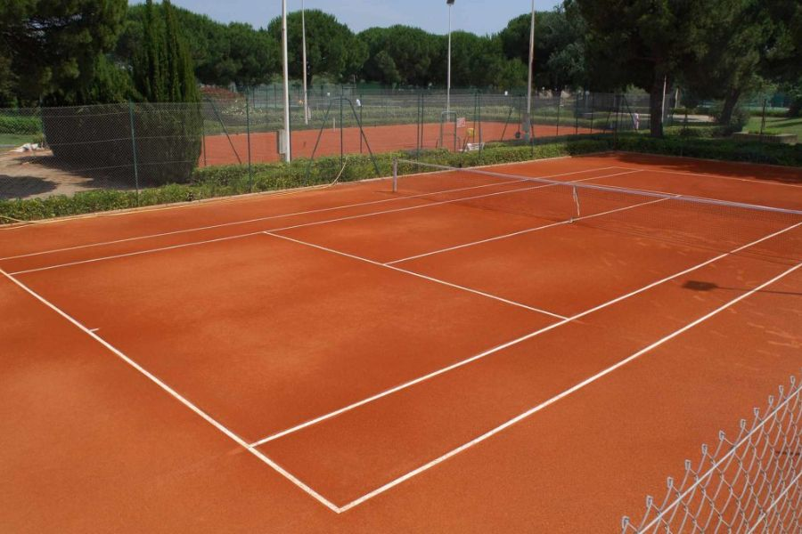
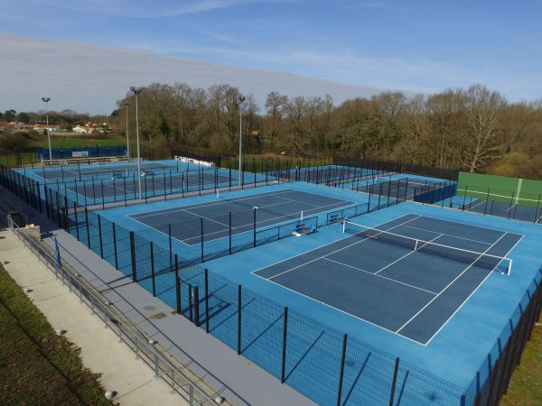

À propos de nous
Notre club de tennis accueille des joueurs de tous niveaux. Que vous soyez débutant ou professionnel, vous trouverez votre place parmi nous.
Histoire du Club de Tennis
1990
Fondation du club de tennis par un groupe de passionnés.
2005
Construction de 3 nouveaux terrains en terre battue.
2010
Rénovation complète des vestiaires pour plus de confort.
2020
Introduction de nouveaux services comme la location de matériel.
Nos installations
- Nombre de terrains : 10 dont 7 sur durs et 3 sur terre battue.
- Terrains en extérieur et non couverts.
- Vestiaires séparés pour hommes et femmes avec douches.
- Buvette extérieure pour se rafraîchir après un match.
Services disponibles
- Adhésion annuelle.
- Réservation de terrain.
- Location de raquettes et de balles sur place.
Galerie :

